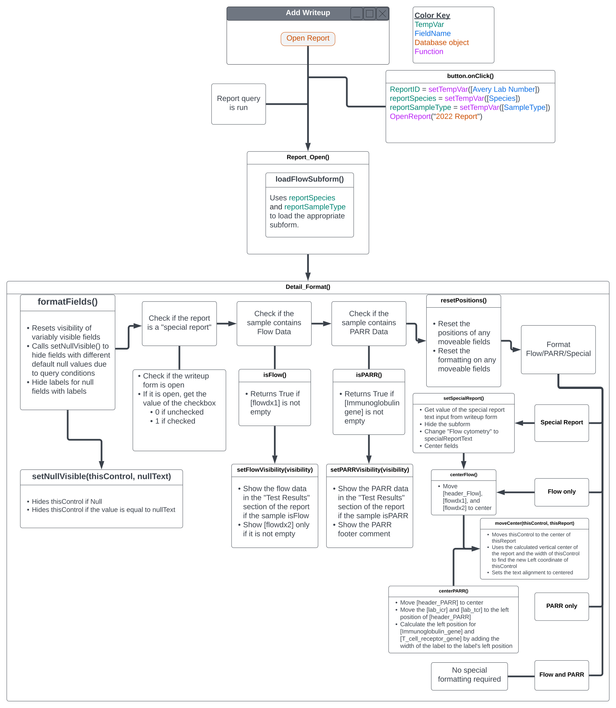
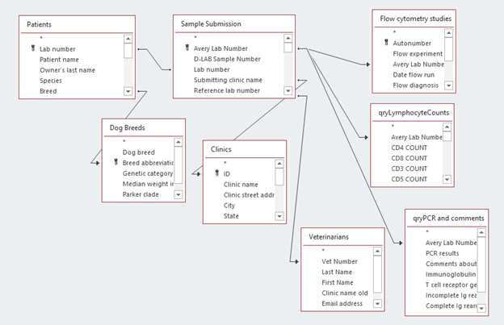
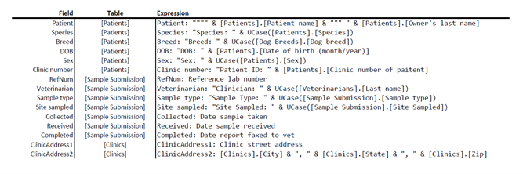
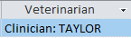
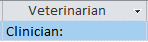

Introduction
The current CH lab report (“2022 report”) uses underlying code with a custom query to format the report conditionally for species, test, and sample type. Each species-sample-test combination requires different types of reports (e.g. a dog FNA flow report will have the main page + the dog FNA flow subreport). Previously, a separate report had to be maintained for each combination. This report consolidates all reports into a single report, facilitating future universal modifications.
Report generation broadly takes place via the following steps:
- Set temporary variables using the “Add Writeup” form.
- Query the data to be used in the report
- Load the appropriate subreport
- Format fields
- Do something with the report (preview, save, email).
Making changes to the report requires understanding the processes that fetch, format, and display the data. This document aims to explain these steps in detail.
The overall flow of report generation follows the following logic:

Temporary Variables
While MS Access offers a wide selection of methods to pass data from one form to another, one of the easiest means is using the built-in function setTempVar. This function can be easily called using Access Macros. This report uses temporary variables to determine:
- reportID (Avery lab number of the sample),
- reportSampleType (blood vs other),
- reportSpecies (cat or dog).
The “preview” button uses a macro to set these values. The “export” and “email” buttons set these values using Modules/Email.setReportID(). This function also sets the reference lab number for usage by the report saving commands.
'Set parameters needed for report generation
Function setReportID(frm As Form)
'Used by the query for the report
TempVars.ADD "reportID", frm.Avery_Lab_Number.Value
'Used in the file name
TempVars.ADD "refNum", frm.Reference_lab_number.Value
'Used to set the species for the subform in the report
TempVars.ADD "reportSpecies", frm.Species.Value
' Used to set the sample type for the subform in the report
TempVars.ADD "reportSampleType", frm.[Sample type].Value
End Function
Report Query
The 2022 report uses “qryReport” as the underlying query. There are a few considerations when modifying this query:
- Data are filtered to the current sample using TempVars!ReportID set in the previous step.
- [qryPCR and comments] includes criteria to remove anything with the word “repeat” in the comments section of the PCR table
- [qryLymphocyteCounts] includes:
- Flow percentages
- Flow counts
The Flow counts fields use a VB expression to calculate the blood counts. The format for this expression is:
NAME: EXPRESSION- Where NAME becomes the column header for the expression and EXPRESSION is any VB method (e.g. WBC*flowPercent/100)
For example:
RefNum: [Reference lab number]- To reference the field in the example above, in the report, you must use [RefNum] as the source, NOT [Reference lab number]
The following fields use an expression in the query:
It is important to note that any fields which use an expression must be referenced by the variable name declared in the expression, NOT by the field’s name in the table
Because Access does not do well with dynamic sizing of components in the horizontal axis, some fields use the following expression to concatenate text with the field value:
“Inserted text: ” & [Field]For example:
Veterinarian: "Clinician: " & UCase([Veterinarians].[Last name])- “Veterinarian” becomes the new column header (i.e. this is the new name we will reference in the report using the source field)
- UCase() capitalizes everything within the parentheses
- The word “Clinician:” is tacked on to the beginning
Final output (if there is a vet listed)
Final output (if there is no vet listed)
There are important considerations of concatenating text inside the query.
- The “label” will always be justified properly with the text without an awkward gap. This is particularly useful if the fields are right aligned since Access only uses the Left coordinate when positioning elements. Otherwise, since Access does have a Right coordinate, dynamically positioning the label and the field is much more complicated.
- However, if you ever want to check a field if it is empty, you cannot compare the field value to “NULL” or “” because the base value is going to be the string that has been concatenated to the field.
Although text concatenation can be used for any field to simplify labeling, due to these considerations, it may be easier to use text concatenation to label the field only when it might be right aligned, or it might be moving.
The following fields use text concatenation:
- Patient
- Species
- Breed
- DOB
- Sex
- Clinic number
- Veterinarian
- Sample type
- Site sampled
- ClinicAddress2
Understanding report methods
Most formatting and conditional data display occurs when the Detail_Format() method is called by the report. However, certain changes (such as changing the subreport object embedded in the report) can only be done when the report is first opened. These changes are handled by the report’s Report_Open() method.
Report_Open()
Run commands when the report is first opened. Tied to the "On Open" event in the Report properties.
' Run commands when the report opens
Private Sub Report_Open(Cancel As Integer)
Call loadFlowSubform
End Sub
loadFlowSubform()
Use the TempVars!reportSpecies and the TempVars!reportSampleType to load one of the following subreports:
- 2022 Report_Cat_Blood
- 2022 Report_Cat_FNA
- 2022 Report_K9_Blood
- 2022 Report_K9_FNA
' Load the appropriate subform for the report
Private Function loadFlowSubform()
'If the sample contains flow data, load the appropriate subform
Dim Species
Dim sampleType
Species = TempVars!reportSpecies
sampleType = TempVars!reportSampleType
If Species = "Cat" Then
If sampleType = "Peripheral Blood" Then
Me.flowSubform.SourceObject = "Report.2022 Report_Cat_Blood"
Else
Me.flowSubform.SourceObject = "Report.2022 Report_Cat_FNA"
End If
Else
If sampleType = "Peripheral Blood" Then
Me.flowSubform.SourceObject = "Report.2022 Report_K9_Blood"
Else
Me.flowSubform.SourceObject = "Report.2022 Report_K9_FNA"
End If
End If
End Function
Detail_Format(Cancel As Integer, FormatCount As Integer)
Run code when the Report is formatted. Tied to the "On Format" event of the Detail section of the report.
Performs the following actions:
- Hide any fields without data using formatFields
- Check if the writeup form is open and if so, check if the special report check box is checked.
- Use isFlow and setFlowVisibility to determine if flow data should be shown in the Test Results section.
- Use isPARR and setParrVisibility to determine if PARR data should be shown in the Test Results section.
- Use resetPositions to reset all moveable items in the Test Results section back to their starting positions
- Conditionally center the data in the Test Results section and conditionally hide the subform
' Run commands when the report is formatted
Private Sub Detail_Format(Cancel As Integer, FormatCount As Integer)
'Declare variables
Dim flowVisibility As Boolean
Dim PARRVisibility As Boolean
Dim specialReport
'Hide null fields
Call formatFields
'Determine if special report
If CurrentProject.AllForms("Add write up and fax date to case").IsLoaded = True Then 'Writeup form is open
'Get value of special report checkbox
specialReport = [Forms]![Add write up and fax date to case]![specialReport].Value
Else 'Writeup form not open, set specialReport to False
specialReport = 0
End If
'Set Flow to visible if flow
flowVisibility = isFlow()
setFlowVisibility (flowVisibility)
'Set PARR to visible if PARR
PARRVisibility = isPARR()
setParrVisibility (PARRVisibility)
'Reset positions
Call resetPositions
'Check report type (Special, Flow, Flow/PARR, PARR)
If specialReport = -1 Then
'Special report
Call setSpecialReport
ElseIf flowVisibility = True Then
' If flow only, center Flow
If PARRVisibility = False Then
Call centerFlow 'Center Flow
End If
ElseIf PARRVisibility = True Then
'If PARR only, center PARR, remove subform
If FLOWVisibility = False Then
Call centerPARR 'Center PARR
Me.flowSubform.Visible = False
End If
Else
Me.flowSubform.Visible = False
End If
End Sub
formatFields()
Conditionally show/hide fields that may have missing values in the database. Uses setNullVisible to hide artificially non-empty, null fields generated by the query.
' Set the visibility of the specific fields on this report
Private Function formatFields()
' Reset visibility of hidden fields
Me.Reference_lab_number.Visible = True
Me.Clinic_number_of_paitent.Visible = True
Me.Last_Name.Visible = True
Me.lab_collected.Visible = True
'Set visibility of potentially null fields with queried text
Call setNullVisible(Me.Reference_lab_number, "Ref: ")
Call setNullVisible(Me.Clinic_number_of_paitent, "Patient ID: ")
Call setNullVisible(Me.Last_Name, "Clinician: ")
' Set collected label invisible if collected null
If IsNull(Me.Collected) Then
Me.lab_collected.Visible = False
End If
End Function
setNullVisible(thisControl as Control, nullText as String)
Handle showing/hiding of fields with alternative null text due to having text concatenated with the field in the query.
Inputs:
- thisControl as Control: the name of the field on the report that should be checked.
- nullText as String: the text concatenated with the value in the database during the query.
' Hide a control if its value is null
Function setNullVisible(thisControl As Control, nullText As String)
If IsNull(thisControl) Then
thisControl.Visible = False
ElseIf thisControl = nullText Then
thisControl.Visible = False
End If
End Function
isFlow()
Check if the sample contains flow cytometry data ([flowdx1] is not empty). Returns a Boolean (True/False).
' Check if the sample has flow data
Private Function isFlow() As Boolean
'Check if flow dx 1 empty
If IsNull(Me.flowdx1) Then 'If empty, then sample is not Flow
isFlow = False
Else
isFlow = True ' Sample is Flow
End If
End Function
setFlowVisibility(visibility As Boolean)
Show/hide the flow fields in the Test Results section.
Inputs:
- visibility As Boolean: boolean object used to control the Visible property for all flow fields on the report.
' Set visibility for flow data
Private Function setFlowVisibility(visibility As Boolean)
'Set Header
Me.header_Flow.Visible = visibility
'Set Flow Diagnosis 1
Me.flowdx1.Visible = visibility
'Set Flow Diagnosis 2
'Check if there is a dx 2
If IsNull(Me.flowdx2) Then
Me.flowdx2.Visible = False
Else
Me.flowdx2.Visible = visibility
End If
End Function
isPARR()
Check if the sample contains PARR data ([Immunoglobulin gene] is not empty). Returns a Boolean (True/False).
' Check if the sample has PARR data
Private Function isPARR() As Boolean
'Check if immunoglobulin empty
If IsNull(Me.[Immunoglobulin gene]) Then 'If empty, then sample is not PARR
isPARR = False
Else 'Sample is PARR
isPARR = True
End If
End Function
setParrVisibility(visibility As Boolean)
Show/hide the PARR fields in the Test Results section.
Inputs:
- visibility As Boolean: boolean object used to control the Visible property for all PARR fields on the report.
' Set visibility for PARR data
Private Function setParrVisibility(visibility As Boolean)
'Set Header
Me.header_PARR.Visible = visibility
'Set Immunoglobulin
Me.lab_ig.Visible = visibility
Me.Immunoglobulin_gene.Visible = visibility
'Set TCR
Me.lab_tcr.Visible = visibility
Me.T_cell_receptor_gene.Visible = visibility
'Set PARR footer
Me.parrComment.Visible = visibility
End Function
setSpecialReport()
Gets the value of the special report field in the writeup form. This text replaces the "Flow Cytometry" label in the Test Results section, makes all Flow fields in Test Results visible, and centers them.
' Set conditions for special report
Private Function setSpecialReport()
Dim specialReportText
specialReportText = Nz([Forms]![Add write up and fax date to case]![text_specialReport].Value, "")
Me.flowSubform.Visible = False
Me.header_Flow.Caption = specialReportText
Call setFlowVisibility(True)
Call centerFlow
End Function
moveCenter(thisControl As Control, thisReport As Report)
Moves the input control to the horizontal center of the report by calculating a new Left value for the control based on the control's width and the report's width.
Inputs:
- thisControl As Control: the name of the field on the report that should be moved to the center.
- thisReport As Report: the name of the report
' Center a control vertically on the report
Function moveCenter(thisControl As Control, thisReport As Report)
Dim reportWidth
Dim reportCenter
Dim controlWidth
Dim centeredLeft
' Get report width
reportWidth = thisReport.Width
' Get report absolute center
reportCenter = reportWidth / 2
'Get control's width
controlWidth = thisControl.Width
' Calculate centered position
centeredLeft = (reportWidth - controlWidth) / 2
' Set text alignment to "Centered"
thisControl.TextAlign = 2
' Move control to center
thisControl.Move (centeredLeft)
End Function
centerFlow()
Moves all flow data to the center of Test Results.
' Center flow data
Private Function centerFlow() As Boolean
Call moveCenter(Me.header_Flow, Me)
Call moveCenter(Me.flowdx1, Me)
Call moveCenter(Me.flowdx2, Me)
End Function
centerPARR()
Moves the labels for PARR fields to the center of Test Results. Aligns the associated fields immediately to the right of the labels.
'Center PARR data
Private Function centerPARR() As Boolean
Dim labLeft
Dim resultLeft
Call moveCenter(Me.header_PARR, Me)
labLeft = (Me.header_PARR.Left)
Me.lab_ig.Move (labLeft)
Me.lab_tcr.Move (labLeft)
resultLeft = labLeft + lab_ig.Width
Me.Immunoglobulin_gene.Move (resultLeft)
Me.T_cell_receptor_gene.Move (resultLeft)
End Function
resetPositions()
Reset the position of all moveable fields. Reset the formatting (text alignment) of center-able fields.
Since the positions of the following fields are reset by this method, any permanent change to the positioning of these fields also requires changing the Left value for that field in this function.
Moveable fields:
- header_Flow
- flowdx1
- flowdx2
- header_PARR
- lab_ig
- lab_tcr
- Immunoglobulin_gene
- T_cell_receptor_gene
' Reset the positions of any moveable controls
Private Function resetPositions()
'This function resets the positioning and formatting of moveable fields
'Reset positions
Me.header_Flow.Left = 360
Me.flowdx1.Left = 360
Me.flowdx2.Left = 360
Me.header_PARR.Left = 5640
Me.lab_ig.Left = 5640
Me.lab_tcr.Left = 5640
Me.Immunoglobulin_gene.Left = 8280
Me.T_cell_receptor_gene.Left = 8280
'Reset formatting
Me.header_Flow.TextAlign = 1
Me.flowdx1.TextAlign = 1
Me.flowdx2.TextAlign = 1
Me.header_PARR.TextAlign = 1
End Function
Subreports
The Blood reports use the built-in MS Access method Iif() to conditionally display "H" or "L" for CBC values.
Iif([condition to test], [result if True], [result if False])It is possible to nest Iif() statements by inserting a second Iif() statement in place of one of the results. For example:
Iif((A = B), "A=B", (Iif((A = C), "A=C", "A does not equal B or C")))The code above asks, "If A equals B, set the text to "A=B". If A does not equal B, check if A equals C. If A equals C, set the text to "A=C". If A does not equal C, set the text to "A does not equal B or C". The equivalent code in VBA would be:
'VBA equivalent of nested Iif()
If (A = B) Then
Me.Text = "A=B"
Else
If (A = C) Then
Me.Text = "A=C"
Else
Me.Text = "A does not equal B or C"
End If
End If
The following subreports also use underlying code to conditionally display/format data:
- 2022_Report_Cat_Blood
- 2022_Report_K9_Blood
- 2022_Report_K9_FNA
These methods are detailed below.
2022 Report Cat Blood
Detail_Format(Cancel As Integer, FormatCount As Integer)
Run code when the subreport is formatted. Tied to the "On Format" event of the subreport's Detail section.
'Run code when formatted
Private Sub Detail_Format(Cancel As Integer, FormatCount As Integer)
'Check for CSU CBC and center date if N/A
setCbcFormatting
End Sub
setCbcFormatting()
Hide the CSU CBC fields using the Visible property when there was no CSU CBC performed. Center CBC date if no CSU CBC.
'If the CSU CBC field is empty, hide the field and center the date
Private Sub setCbcFormatting()
'Reset moveable fields position
Me.lab_CBC.Left = 2460
Me.Date_of_CBC.Left = 4065
'Reset visibility
Me.CSU_CBC_DLab_number.Visible = True
Me.lab_CsuCbc.Visible = True
'If CSU CBC empty, hide fields
If IsNull(Me.CSU_CBC_DLab_number) Then
'Hide CSU CBC when empty
Me.CSU_CBC_DLab_number.Visible = False
Me.lab_CsuCbc.Visible = False
'Center CBC date
Me.lab_CBC.Left = 4400
Me.Date_of_CBC.Left = 4460 + Me.lab_CBC.Width
Else
Me.CSU_CBC_DLab_number.Visible = True
Me.lab_CsuCbc.Visible = True
End If
End Sub
2022 Report K9 Blood
Detail_Format(Cancel As Integer, FormatCount As Integer)
Run code when the subreport is formatted. Tied to the "On Format" event of the subreport's Detail section.
'Run code when formatted
Private Sub Detail_Format(Cancel As Integer, FormatCount As Integer)
'Check for CSU CBC and center date if N/A
setCbcFormatting
'Check if B cell and hide field if not
setBcellVisible
End Sub
setCbcFormatting()
Hide the CSU CBC fields using the Visible property when there was no CSU CBC performed. Center CBC date if no CSU CBC.
'If the CSU CBC field is empty, hide the field and center the date
Private Sub setCbcFormatting()
'Reset moveable fields position
Me.lab_CBC.Left = 2200
Me.Date_of_CBC.Left = 3615
'Reset visibility
Me.CSU_CBC_DLab_number.Visible = True
Me.lab_CsuCbc.Visible = True
'If CSU CBC empty, hide fields
If IsNull(Me.CSU_CBC_DLab_number) Then
'Hide CSU CBC when empty
Me.CSU_CBC_DLab_number.Visible = False
Me.lab_CsuCbc.Visible = False
'Center CBC date
Me.lab_CBC.Left = 4580
Me.Date_of_CBC.Left = 4640 + Me.lab_CBC.Width
Else
Me.CSU_CBC_DLab_number.Visible = True
Me.lab_CsuCbc.Visible = True
End If
End Sub
setBcellVisible()
Hide the B cell information if there is no B cell data in [Cat_size]
'Set visibility of B cell fields if B cell
Private Sub setBcellVisible()
Dim visibility As Boolean
'If B cell size empty, hide fields
If IsNull(Me.Cat_size) Then
visibility = False
Else
visibility = True
End If
'Set visibility
Me.lab_bCellSize.Visible = visibility
Me.Cat_size.Visible = visibility
End Sub
2022 Report K9 FNA
Detail_Format(Cancel As Integer, FormatCount As Integer)
Run code when the subreport is formatted. Tied to the "On Format" event of the subreport's Detail section.
'Run code on format
Private Sub Detail_Format(Cancel As Integer, FormatCount As Integer)
'Check if B cell and hide field if not
setBcellVisible
End Sub
setBcellVisible()
Hide the B cell information if there is no B cell data in [Cat_size]
'Set visibility of B cell fields if B cell
Private Sub setBcellVisible()
Dim visibility As Boolean
'If B cell size empty, hide fields
If IsNull(Me.Cat_size) Then
visibility = False
Else
visibility = True
End If
'Set visibility
Me.box_bCell.Visible = visibility
Me.lab_boxBCell.Visible = visibility
Me.lab_bCellSize.Visible = visibility
Me.lab_bCellClassII.Visible = visibility
Me.Cat_size.Visible = visibility
Me.Cat_class_II.Visible = visibility
Me.lab_bCellDescription.Visible = visibility
End Sub